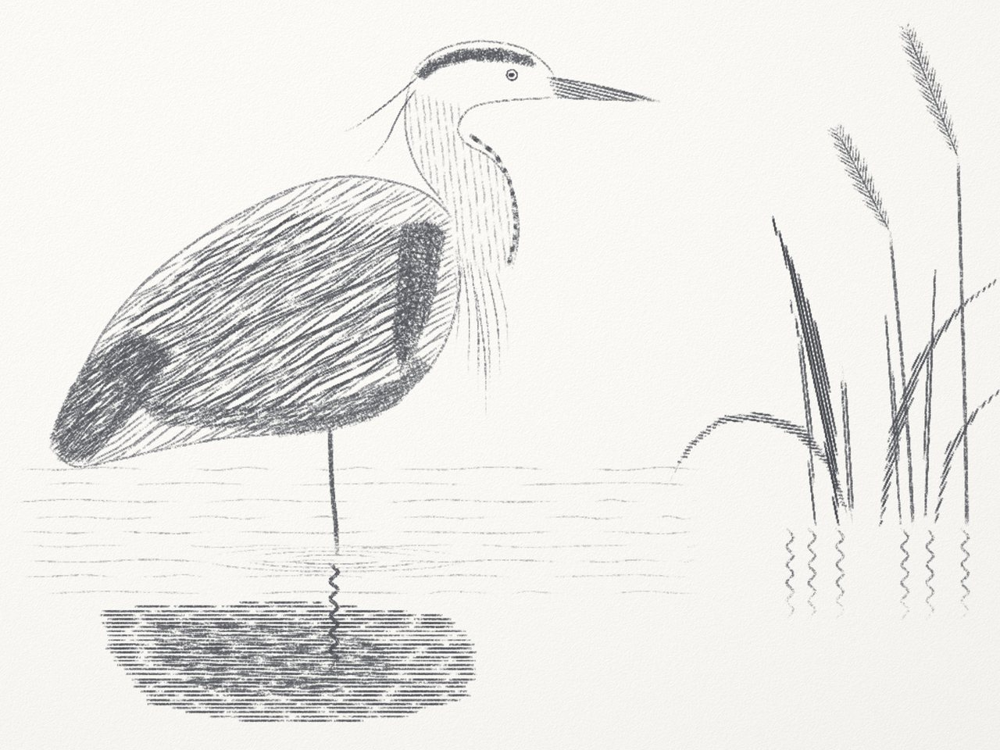
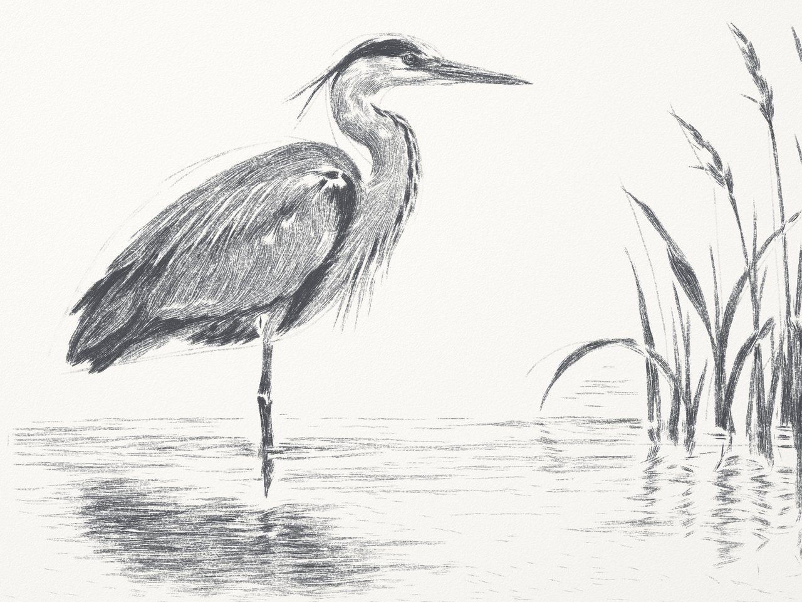
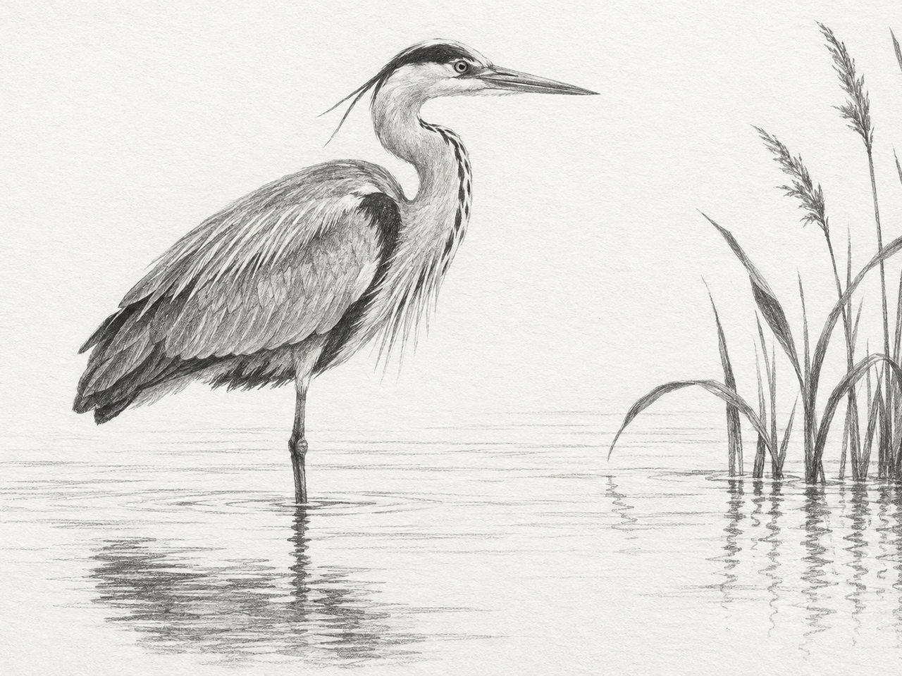
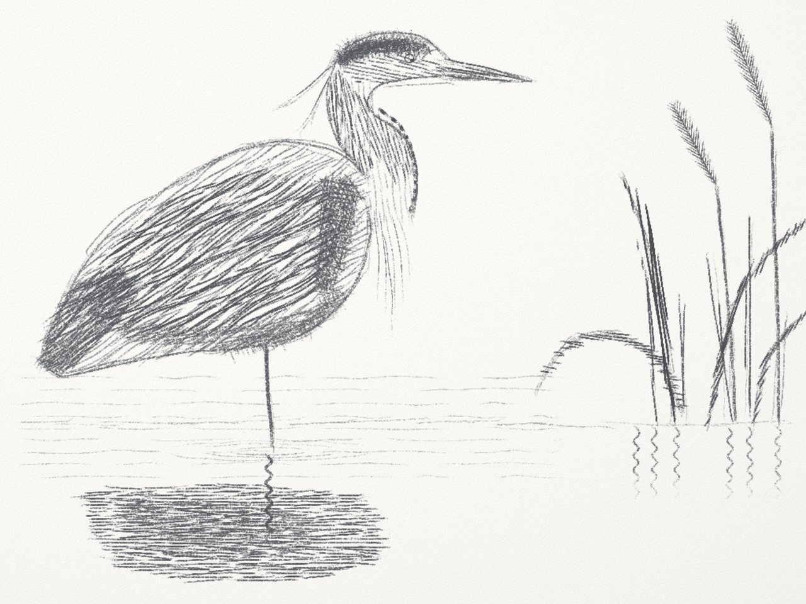
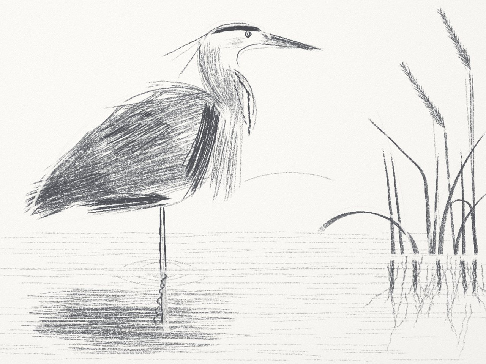
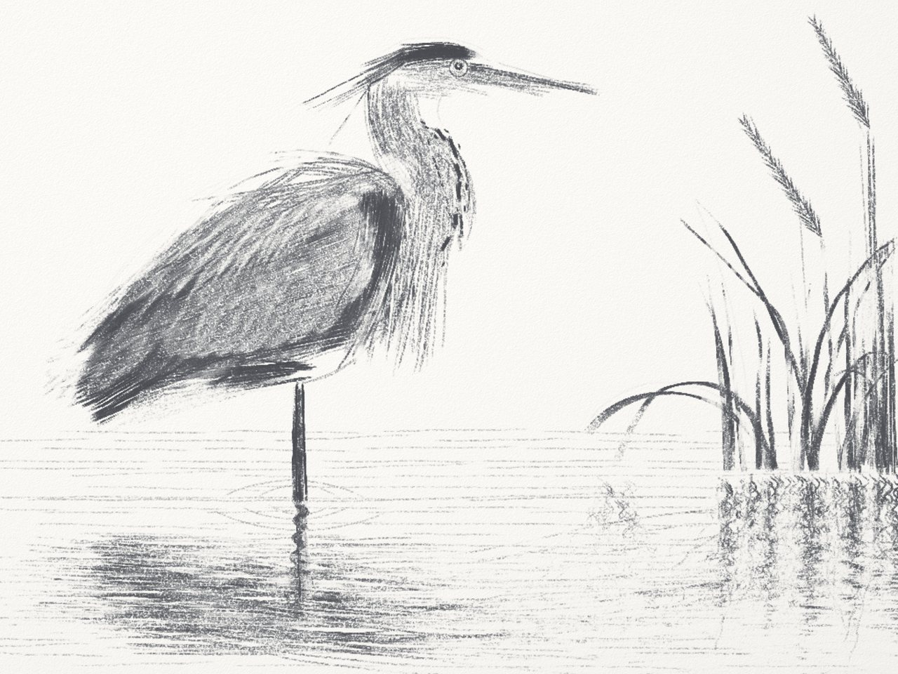

Heron 1
First try used a set of strokes Claude wrote in code. Every line got plotted as an exact curve and traced at a constant speed, so it looks like a machine drew it.
error 6.34 · 1,590 actions kept · 57 checkpoints, 44 rolled back
Next: Claude learns to paint →
I had Claude build a pencil simulator and then draw the same heron in it five times, in less than a day. Here's what changed each time.


Claude built the sim. Graphite catches on the paper's texture and the eraser can lift it back off, so marks behave roughly like a real pencil.
OpenAI's image model makes a reference picture, which is basically Claude's mind's eye, the thing it's trying to draw. Claude draws in batches and checkpoints as it goes, scoring each checkpoint against the reference. That score is the error. Lower is closer, and a blank page is about 9.2.
If a batch makes things worse it rolls back. Anything it rolls back stays around as a lookahead it can come back to.

First try used a set of strokes Claude wrote in code. Every line got plotted as an exact curve and traced at a constant speed, so it looks like a machine drew it.
error 6.34 · 1,590 actions kept · 57 checkpoints, 44 rolled back

This time it roughed in the outlines first and could zoom in on a region to compare it to the reference. The pencil still moved kind of like a CNC machine, so a simulated hand took over moving it along the paths, speeding up and slowing down like a real hand.
error 6.16 · 1,878 actions kept · 9 checkpoints, none rolled back

Turns out it was still planning the paths and the hand was just following them, so that got turned off. Now every mark is a gesture. Claude decides where the hand starts and how it gets pushed, and the line goes wherever that takes it. This was the first big drop in error.
error 5.23 · 1,498 actions kept · 39 checkpoints, 14 rolled back

Heron 4 kept going on heron 3. It zoomed way in on one region at a time. It pressed harder wherever it was too light and erased wherever it was too dark. That's the biggest drop between any two herons.
error 3.37 · 1,852 more actions kept · 58 more checkpoints, 24 rolled back
Then it started over on a blank page with all of that from the first stroke. Claude wrote a little tool that figures out which way the detail runs in the reference, like the feathers and the reed blades, and lays strokes along it.
It builds the tone up in three light passes and presses as hard as the reference asks, so the white of the neck stays bare paper. It also ran the sim at twice the resolution so the pencil point could be finer. Smudging with a blending stump made it worse both times it tried, so that's not in there.
error 2.66 · 11,964 actions kept · 30 checkpoints, 7 rolled back
All five back to back, with music.
Heron 5's eye is still muddy and the reed reflections are missing the zigzags.